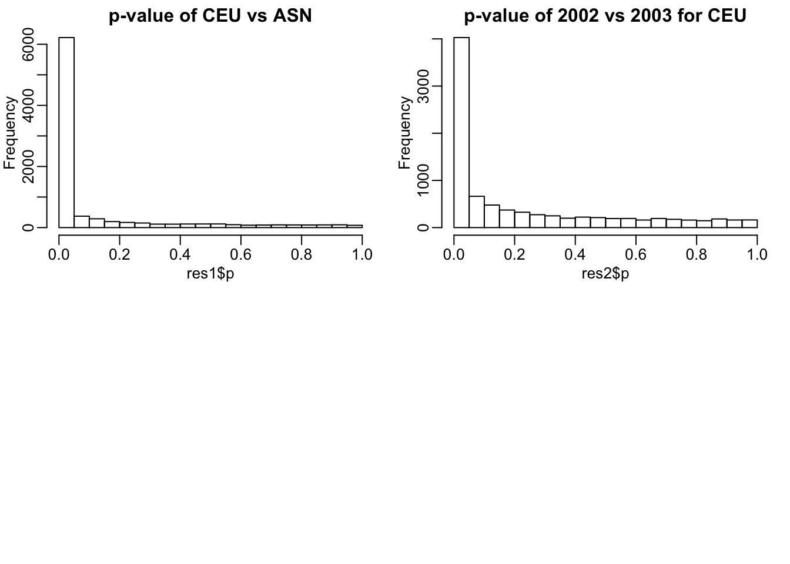
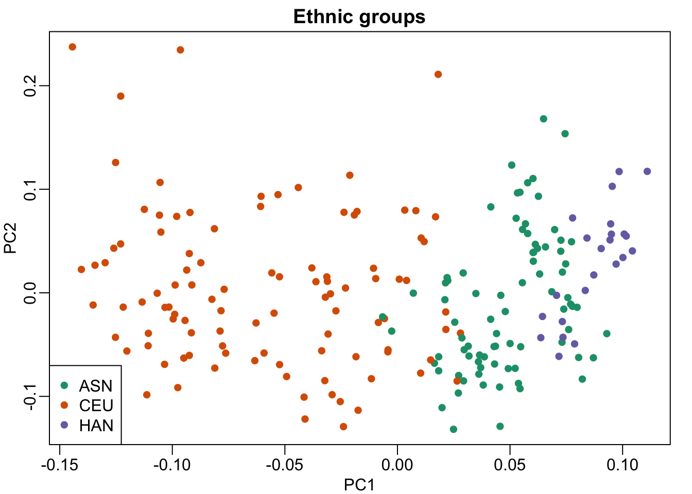
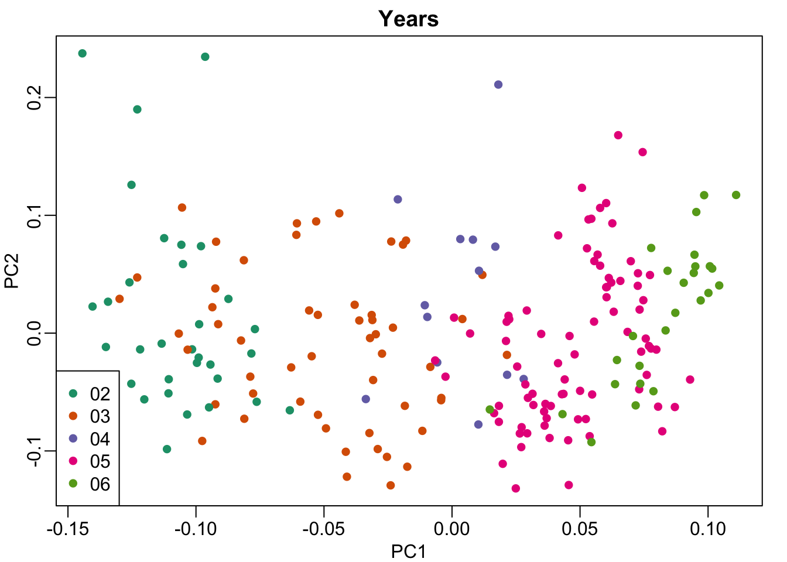

Last updated: 2018-06-20
workflowr checks: (Click a bullet for more information) ✖ R Markdown file: uncommitted changes
The R Markdown is untracked by Git. To know which version of the R Markdown file created these results, you’ll want to first commit it to the Git repo. If you’re still working on the analysis, you can ignore this warning. When you’re finished, you can run wflow_publish to commit the R Markdown file and build the HTML.
✔ Environment: empty
Great job! The global environment was empty. Objects defined in the global environment can affect the analysis in your R Markdown file in unknown ways. For reproduciblity it’s best to always run the code in an empty environment.
✔ Seed:
set.seed(20180620)
The command set.seed(20180620) was run prior to running the code in the R Markdown file. Setting a seed ensures that any results that rely on randomness, e.g. subsampling or permutations, are reproducible.
✔ Session information: recorded
Great job! Recording the operating system, R version, and package versions is critical for reproducibility.
✔ Repository version: 5161d10
wflow_publish or wflow_git_commit). workflowr only checks the R Markdown file, but you know if there are other scripts or data files that it depends on. Below is the status of the Git repository when the results were generated:
Ignored files:
Ignored: .DS_Store
Ignored: docs/.Rhistory
Untracked files:
Untracked: analysis/analysis.Rmd
Unstaged changes:
Modified: analysis/index.Rmd
source("http://bioconductor.org/biocLite.R")Bioconductor version 3.6 (BiocInstaller 1.28.0), ?biocLite for helpA new version of Bioconductor is available after installing the most
recent version of R; see http://bioconductor.org/installbiocLite("Biobase")BioC_mirror: https://bioconductor.orgUsing Bioconductor 3.6 (BiocInstaller 1.28.0), R 3.4.1 (2017-06-30).Installing package(s) 'Biobase'
The downloaded binary packages are in
/var/folders/t8/vcjs1m5x5v5_xvx8q_j1p9gw0000gn/T//RtmpTBwRIa/downloaded_packagesOld packages: 'httpuv', 'later', 'mgcv', 'utf8'biocLite("genefilter")BioC_mirror: https://bioconductor.orgUsing Bioconductor 3.6 (BiocInstaller 1.28.0), R 3.4.1 (2017-06-30).Installing package(s) 'genefilter'
The downloaded binary packages are in
/var/folders/t8/vcjs1m5x5v5_xvx8q_j1p9gw0000gn/T//RtmpTBwRIa/downloaded_packagesOld packages: 'httpuv', 'later', 'mgcv', 'utf8'devtools::install_github("genomicsclass/GSE5859")Downloading GitHub repo genomicsclass/GSE5859@master
from URL https://api.github.com/repos/genomicsclass/GSE5859/zipball/masterInstalling GSE5859'/Library/Frameworks/R.framework/Resources/bin/R' --no-site-file \
--no-environ --no-save --no-restore --quiet CMD INSTALL \
'/private/var/folders/t8/vcjs1m5x5v5_xvx8q_j1p9gw0000gn/T/RtmpTBwRIa/devtools5bd04fe72a69/genomicsclass-GSE5859-3d8cdd7' \
--library='/Library/Frameworks/R.framework/Versions/3.4/Resources/library' \
--install-tests library(Biobase)Warning: package 'Biobase' was built under R version 3.4.2Loading required package: BiocGenericsWarning: package 'BiocGenerics' was built under R version 3.4.2Loading required package: parallel
Attaching package: 'BiocGenerics'The following objects are masked from 'package:parallel':
clusterApply, clusterApplyLB, clusterCall, clusterEvalQ,
clusterExport, clusterMap, parApply, parCapply, parLapply,
parLapplyLB, parRapply, parSapply, parSapplyLBThe following objects are masked from 'package:stats':
IQR, mad, sd, var, xtabsThe following objects are masked from 'package:base':
anyDuplicated, append, as.data.frame, cbind, colMeans,
colnames, colSums, do.call, duplicated, eval, evalq, Filter,
Find, get, grep, grepl, intersect, is.unsorted, lapply,
lengths, Map, mapply, match, mget, order, paste, pmax,
pmax.int, pmin, pmin.int, Position, rank, rbind, Reduce,
rowMeans, rownames, rowSums, sapply, setdiff, sort, table,
tapply, union, unique, unsplit, which, which.max, which.minWelcome to Bioconductor
Vignettes contain introductory material; view with
'browseVignettes()'. To cite Bioconductor, see
'citation("Biobase")', and for packages 'citation("pkgname")'.library(rafalib)
library(GSE5859)
library(genefilter)Warning: package 'genefilter' was built under R version 3.4.2data(GSE5859)# gene expression levels
geneExpression = exprs(e)# print date info
sampleInfo = pData(e)
head(sampleInfo$date)[1] "2003-02-04" "2003-02-04" "2002-12-17" "2003-01-30" "2003-01-03"
[6] "2003-01-16"Check years that the data from different ethnic groups were collected
# Print a table of year vs ethnic groups
year = factor( format(sampleInfo$date,"%y") )
tab = table(year,sampleInfo$ethnicity)
print(tab)
year ASN CEU HAN
02 0 32 0
03 0 54 0
04 0 13 0
05 80 3 0
06 2 0 24##remove control genes
out <- grep("AFFX",rownames(geneExpression))We first use a t-test to perform differential expression analysis between CEU and ASN.
eth <- sampleInfo$ethnicity
ind<- which(eth%in%c("CEU","ASN"))
res1 <- rowttests(geneExpression[-out,ind],droplevels(eth[ind]))We then perform the same analysis between 2002 vs 2003 within CEU.
ind <- which(year%in%c("02","03") & eth=="CEU")
res2 <- rowttests(geneExpression[-out,ind],droplevels(year[ind]))We plot histograms for p-values as in Akey et al (2007).
mypar(2, 2)
hist(res1$p, main="p-value of CEU vs ASN")
hist(res2$p, main="p-value of 2002 vs 2003 for CEU")
There are a lot of significant genes between the CEU samples collected in 2002 and 2003.
cors <- cor(exprs(e))
Pairs=which(abs(cors)>0.9999,arr.ind=TRUE)
out = Pairs[which(Pairs[,1]<Pairs[,2]),,drop=FALSE]
if(length(out[,2])>0) e=e[,-out[2]]
# remove control probes from the analysis
out <- grep("AFFX",featureNames(e))
e <- e[-out,]y <- exprs(e)-rowMeans(exprs(e))
dates <- pData(e)$date
eth <- pData(e)$ethnicitys <- svd(y)
# output: plot MDS plot of PC1 and PC2 for ethnic groups
cols = as.numeric(eth)
mypar()
plot(s$v[,1],s$v[,2],col=cols,pch=16, xlab="PC1",ylab="PC2")
legend("bottomleft",levels(eth),col=seq(along=levels(eth)),pch=16)
title("Ethnic groups")
# output: plot PC1 and PC2 for years
cols = as.numeric(year)
mypar()
plot(s$v[,1],s$v[,2],col=cols,pch=16, xlab="PC1",ylab="PC2")
legend("bottomleft",levels(year),col=seq(along=levels(year)),pch=16)
title("Years")
sessionInfo()R version 3.4.1 (2017-06-30)
Platform: x86_64-apple-darwin15.6.0 (64-bit)
Running under: macOS Sierra 10.12.6
Matrix products: default
BLAS: /Library/Frameworks/R.framework/Versions/3.4/Resources/lib/libRblas.0.dylib
LAPACK: /Library/Frameworks/R.framework/Versions/3.4/Resources/lib/libRlapack.dylib
locale:
[1] en_US.UTF-8/en_US.UTF-8/en_US.UTF-8/C/en_US.UTF-8/en_US.UTF-8
attached base packages:
[1] parallel stats graphics grDevices utils datasets methods
[8] base
other attached packages:
[1] genefilter_1.60.0 GSE5859_1.0 rafalib_1.0.0
[4] Biobase_2.38.0 BiocGenerics_0.24.0 BiocInstaller_1.28.0
loaded via a namespace (and not attached):
[1] Rcpp_0.12.17 compiler_3.4.1 RColorBrewer_1.1-2
[4] git2r_0.21.0 workflowr_1.0.1 R.methodsS3_1.7.1
[7] R.utils_2.6.0 bitops_1.0-6 tools_3.4.1
[10] bit_1.1-14 digest_0.6.15 lattice_0.20-35
[13] annotate_1.56.2 evaluate_0.10.1 memoise_1.1.0
[16] RSQLite_2.1.1 Matrix_1.2-14 DBI_1.0.0
[19] curl_3.2 yaml_2.1.19 withr_2.1.2
[22] httr_1.3.1 stringr_1.3.1 knitr_1.20
[25] IRanges_2.12.0 S4Vectors_0.16.0 devtools_1.13.5
[28] grid_3.4.1 bit64_0.9-7 stats4_3.4.1
[31] rprojroot_1.3-2 R6_2.2.2 AnnotationDbi_1.40.0
[34] survival_2.42-3 XML_3.98-1.11 rmarkdown_1.10
[37] blob_1.1.1 magrittr_1.5 whisker_0.3-2
[40] splines_3.4.1 backports_1.1.2 htmltools_0.3.6
[43] xtable_1.8-2 stringi_1.2.3 RCurl_1.95-4.10
[46] R.oo_1.22.0 This reproducible R Markdown analysis was created with workflowr 1.0.1